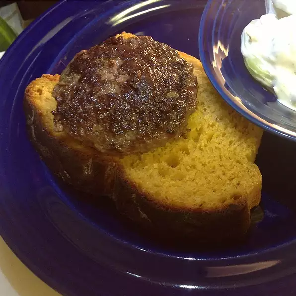

German Hamburgers

Description
The original hamburger, these are served like a flattened meatball with some steamed string beans and salad. I also like to use this recipe to make Swedish meatballs (but omit the paprika). My Aunt in Hamburg, Germany taught me this recipe and I've been making them ever since. Serve with steamed string beans and tossed salad. Or serve on a Kaiser roll with lettuce, tomato, pickled cucumbers, finely sliced deep fried onions and curry ketchup.
Ingredients
- 1 Kaiser roll
- ⅔ pound ground beef
- ⅓ pound ground pork
- 1 onion, finely chopped
- ¼ cup chopped fresh parsley
- 1 egg
- 1 teaspoon Hungarian hot paprika (Optional)
- salt and ground black pepper to taste
Directions
- Soak Kaiser roll in a bowl of water for 10 minutes. Drain, squeezing out excess water, and crumble into a large bowl.
- Mix crumbled roll with ground beef, ground pork, onion, parsley, egg, paprika, salt, and black pepper until well blended. Shape meat into large flattened meatballs.
- Heat a large nonstick skillet over medium heat; fry meatballs until browned and no longer pink in the center, about 5 minutes per side.
<Tip
Aluminum foil helps keep food moist, ensures it cooks evenly, keeps leftovers fresh, and makes clean-up easy
Return to main page